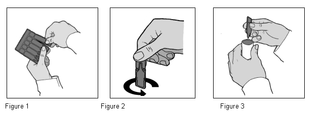

RÉSUMÉ DES CARACTÉRISTIQUES DU PRODUIT
ANSM - Mis à jour le : 19/08/2014
IPRATROPIUM TEVA 0,25 mg/1 ml ENFANTS, solution pour inhalation par nébuliseur en récipient unidose
2. COMPOSITION QUALITATIVE ET QUANTITATIVE
Bromure d'ipratropium anhydre ........................................................................................................ 0,250 mg
Sous forme de bromure d'ipatrotrium monohydraté ............................................................................ 0,261 mg
Pour 1 ml.
Pour la liste complète des excipients, voir rubrique 6.1.
Solution pour inhalation par nébuliseur en récipient unidose.
Solution incolore transparente de pH compris entre 3,0 et 4,0 et d'osmolarité comprise entre 257 et 284 mOsm/kg.
4.1. Indications thérapeutiques
Traitement des bronchospasmes réversibles associés à une bronchopneumopathie chronique obstructive (BPCO).
Traitement symptomatique de l'asthme en association avec un bêta 2-mimétique inhalé.
4.2. Posologie et mode d'administration
IPRATROPIUM TEVA 0,25 mg/1 ml est utilisé lorsque la dose optimale correspond au contenu d'une ampoule de 1 ml.
Posologie
La posologie sera adaptée aux besoins individuels du patient. IPRATROPIUM TEVA 0,25 mg/1 ml correspond au dosage adapté à l'enfant de moins de 12 ans.
Doses recommandées:
Adultes (y compris personnes âgées) et adolescents de plus de 12 ans:
0,25 à 0,50 mg (soit 1 ampoule de 0,25 mg/1 ml ou 1 ampoule de 0,50 mg/ 2 ml) 3 à 4 fois par jour.
Traitement des bronchospasmes aigus: 0,50 mg.
Les nébulisations peuvent être répétées jusqu'à la stabilisation de l'état clinique du patient. L'intervalle entre chaque nébulisation sera déterminé par le médecin.
Il est recommandé de ne pas dépasser la posologie quotidienne recommandée, que ce soit pendant la phase de traitement aiguë ou d'entretien. Les doses quotidiennes supérieures à 2 mg chez les adultes et les adolescents doivent être administrées sous surveillance médicale uniquement.
Enfants de 6 à 12 ans:
0,25 mg (soit 1 ampoule de 0,25 mg/1 ml) jusqu'à une dose quotidienne totale de 1 mg (4 ampoules de 0,25 mg/1 ml). L'intervalle entre chaque nébulisation sera adapté par le médecin en fonction de l'état clinique du patient.
Enfants de 0 à 5 ans (traitement de l'asthme aigu uniquement):
Les données chez l'enfant étant limitées, le traitement sera administré sous surveillance médicale.
La dose préconisée est de: 0,125 mg à 0,250 mg (soit une demie à une ampoule de 0,25 mg/ 1 ml) jusqu'à une dose quotidienne totale de 1 mg (soit 4 ampoules de 0,25 mg/1 ml).
Chez les enfants de moins de 5 ans, les nébulisations de bromure d'ipratropium doivent être espacées d'au moins 6 heures.
En cas de bronchospasme aigu, les nébulisations peuvent être répétées jusqu'à la stabilisation de l'état clinique du patient.
Si le traitement n'apporte pas d'amélioration satisfaisante ou si l'état clinique du patient se détériore, il convient de réévaluer la conduite thérapeutique.
La survenue d'une dyspnée aiguë ou d'une aggravation brutale, doit conduire à une réévaluation de la conduite thérapeutique.
Mode d'administration
IPRATROPIUM TEVA peut être administré à l'aide d'un appareil de nébulisation ultrasonique ou à air comprimé (débit optimal: de 6 à 8 litres par minute). Les doses délivrées peuvent varier en fonction de l'appareil de nébulisation utilisé.
IPRATROPIUM TEVA peut être inhalé sous forme non diluée ou diluée dans du sérum physiologique. Dans ce cas, le volume de sérum physiologique sera adapté en fonction du nébuliseur utilisé.
Si la quantité de produit à administrer en prise unique correspond au dosage de IPRATROPIUM TEVA, le contenu de l'ampoule pourra être inhalé en entier.
Modalités de préparation:
1. Préparer le nébuliseur en se conformant aux recommandations du fabricant de l'appareil.
2. Détacher une ampoule comme indiqué sur la Figure 1.
3. Ouvrir l'ampoule en plastique en opérant un mouvement de torsion comme indiqué sur la Figure 2.
4. Remplir la cuve du nébuliseur comme indiqué sur la Figure 3.
5. En fonction de l'appareil utilisé, ajouter du sérum physiologique si nécessaire.
6. Assembler le nébuliseur conformément au mode d'emploi du fabricant. La durée d'inhalation d'une dose complète est généralement comprise entre 5 et 15 minutes.
7. Après inhalation, jeter la solution restant dans la cuve et nettoyer le nébuliseur conformément aux recommandations du fabricant.
Le récipient unidose ne contient pas de conservateur et son contenu doit donc être administré dès ouverture. Une nouvelle ampoule doit être utilisée à chaque administration afin d'éviter toute contamination microbienne. Les récipients unidoses ouverts ou endommagés doivent être jetés (voir rubrique 6.6).

Hypersensibilité à la substance active, à l'atropine, aux dérivés de l'atropine ou à l'un des excipients.
4.4. Mises en garde spéciales et précautions d'emploi
Utilisation chez l'enfant
L'ipratropium n'est pas le traitement de première intention des épisodes aigus de bronchospasme qui nécessite en premier lieu un traitement d'action rapide.
Complications oculaires
De rares cas de complications oculaires (mydriase, augmentation de la pression intraoculaire, glaucome par fermeture de l'angle et douleur oculaire) ont été signalés après projection accidentelle intraoculaire de bromure d'ipratropium seul ou associé à un bêta 2-sympathomimétique.
L'apparition d'une douleur ou d'une gêne oculaire, d'une vision trouble de la perception visuelle, d'anneaux ou images colorés associés à une rougeur conjonctivale ou une congestion de la cornée sont des signes annonciateurs d'un glaucome par fermeture de l'angle et nécessite l'instillation d'un collyre myotique et un avis médical spécialisé immédiat.
Par conséquent, le patient devra être clairement informé des modalités d'utilisation adaptées de IPRATROPIUM TEVA. La prudence est recommandée afin de parer à la projection intraoculaire du produit. De façon générale, il est préférable d'administrer la solution nébulisée d'ipratropium par l'intermédiaire d'un embout buccal. En cas d'impossibilité, un masque adapté pourra être utilisé s'il est correctement ajusté au patient. Il sera conseillé en particulier chez les patients à risque de glaucome de se protéger les yeux des éventuelles projections.
Autres précautions d'emploi:
IPRATROPIUM TEVA doit être administré avec précautions chez les patients prédisposés au glaucome par fermeture de l'angle, en cas d'adénomes prostatiques, de rétrécissement urétral ou d'occlusion intestinale.
Les patients atteints de fibrose kystique peuvent être sujets à des troubles de la motilité gastro-intestinale.
L'administration de IPRATROPIUM TEVA peut entraîner des réactions allergiques immédiates à type rarement d'urticaires, d'angio-œdèmes, d'éruptions cutanées, de bronchospasmes et d'œdèmes oro-pharyngés.
Le bromure d'ipratropium sera utilisé avec prudence en cas de pathologie cardiaque.
Si des doses supérieures aux posologies recommandées sont nécessaires pour contrôler les symptômes de bronchoconstriction (ou bronchospasmes), la conduite thérapeutique devra être réévaluée.
4.5. Interactions avec d'autres médicaments et autres formes d'interactions
Les bêta 2-sympathomimétiques et les dérivés de la xanthine peuvent accroître l'effet bronchodilatateur du bromure d'ipratropium.
L'administration concomitante d'autres agents anticholinergiques peut potentialiser le risque de survenue d'effets indésirables.
IPRATROPIUM TEVA, solution pour inhalation par nébuliseur, NE DOIT PAS être mélangé à d'autres solutions pour inhalation dans le même nébuliseur (voir rubrique 6.2).
Il n'existe pas de données cliniques documentées concernant des grossesses exposées au bromure d'ipratropium. Les études chez l'animal n'ont pas mis en évidence d'effet tératogène direct ou indirect sur la grossesse, le développement embryonnaire/fœtal, la parturition ou le développement postnatal.
Le risque potentiel dans l'espèce humaine n'est pas connu. En conséquence, l'utilisation d'IPRATROPIUM TEVA ne doit être envisagée au cours de la grossesse que si nécessaire.
En l'absence de données sur le passage du bromure d'ipratropium dans le lait maternel et compte tenu de ses propriétés pharmacocinétiques, il est peu probable que le bromure d'ipratropium soit excrété en quantité significative dans le lait maternel.
En conséquence, l'utilisation d'IPRATROPIUM TEVA peut être envisagée si nécessaire au cours de l'allaitement.
4.7. Effets sur l'aptitude à conduire des véhicules et à utiliser des machines
Le bromure d'ipratropium ne semble pas avoir d'influence sur l'aptitude à conduire des véhicules et à utiliser des machines. L'attention des conducteurs de véhicules et des utilisateurs de machines est attirée sur le risque de survenue de vertiges.
Les événements indésirables sont énumérés dans le tableau ci-dessous, par classe de système d'organe selon MedDRA et par catégorie de fréquence. Les fréquences sont définies comme suit: très fréquent (≥1/10), fréquent (≥1/100 à <1/10), peu fréquent (≥1/1 000 à <1/100), rare (≥1/10 000 à ≤1/1 000), très rare (<1/10 000), fréquence inconnue (estimation impossible à partir des données disponibles).
|
Fréquence |
Classes de systèmes d'organes |
Symptômes |
|
Fréquent (≥1/100 à <1/10) |
Affections respiratoires, thoraciques et médiastinales |
Toux, irritation locale, bronchospasme paradoxal induit par l'inhalation |
|
|
Affections gastro-intestinales |
Sécheresse buccale, troubles de la motilité gastro-intestinale, vomissements |
|
|
Troubles généraux et anomalies au site d'administration |
Céphalée |
|
Peu fréquent |
Affections cardiaques |
Tachycardie |
|
(≥1/1 000 à <1/100) |
Affections oculaires |
Troubles de l'accommodation visuelle, glaucome par fermeture de l'angle |
|
|
Affections de la peau et du tissu sous -cutané |
Rash, Prurit |
|
|
Troubles généraux et anomalies au site d'administration |
Réactions allergiques |
|
Rare |
Affections cardiaques |
Palpitations, tachycardie supraventriculaire, fibrillation auriculaire |
|
(≥1/10 000 à <1/1000) |
Affections oculaires |
Augmentation de la pression intraoculaire, douleur oculaire, mydriase |
|
|
Affections respiratoires, thoraciques et médiastinales |
Spasme laryngé |
|
|
Affections gastro-intestinales |
Nausées |
|
|
Affections du rein et des voies urinaires |
Rétention urinaire |
|
|
Affections de la peau et du tissu sous -cutané |
Urticaire |
|
Très rare |
Affections du système nerveux |
Vertiges |
|
(<1/10 000) |
Affections respiratoires, thoraciques et médiastinales |
Bronchospasme |
|
|
Affections gastro-intestinales |
Occlusion intestinale |
|
|
Affections du système immunitaire |
Angio-œdème, anaphylaxie |
Il n'a pas été observé de symptômes spécifiques après un surdosage.
L'administration par voie locale et la marge thérapeutique large n'expose pas le patient à un risque de survenue d'effets indésirables anticholinergiques graves en cas de surdosage. Des effets indésirables d'intensité modérée liés à l'effet anticholinergique peuvent apparaître tels que sécheresse buccale, troubles de l'accommodation visuelle et tachycardie.
Les symptômes d'un surdosage sévère correspondent à une majoration des effets atropiniques tels que tachycardie, tachypnée, hyperthermie et effets sur le système nerveux central à type d'agitation, confusion et hallucinations. Il conviendra alors d'instaurer un traitement symptomatique adapté. En cas de troubles respiratoires, une assistance respiratoire doit être mise en œuvre. L'administration de physiostigmine n'est généralement pas recommandée en raison de ses effets cardiotoxiques et des risques de convulsions; elle nécessitera une surveillance électrocardiographique par ECG et les moyens d'assurer une ventilation assistée si besoin.
5. PROPRIETES PHARMACOLOGIQUES
5.1. Propriétés pharmacodynamiques
Classe pharmacothérapeutique: autres médicaments pour les syndromes obstructifs des voies aériennes par inhalation, anticholinergiques, Code ATC: R03BB01.
Les anticholinergiques inhibent l'augmentation de la concentration intracellulaire du monophosphate de guanosine cyclique (GNP cyclique) induit par l'action de l'acétylcholine au niveau des récepteurs muscariniques du muscle lisse bronchique.
Le bromure d'ipratropium inhalé exerce un effet sélectif bronchodilatateur local au niveau des bronches.
Dans une étude contrôlée de 90 jours menée chez des patients présentant une bronchoconstriction associée à une bronchopneumopathie chronique obstructive (bronchite chronique et emphysème), une augmentation du VEMS et du DEF25-75 % d'au moins 15 % a été observée dans un délai de 15 minutes. Le pic de l'effet était atteint en 1 à 2 heures et l'effet était maintenu durant 6 heures maximum.
Les études précliniques et cliniques n'ont pas retrouvé d'effet du bromure d'ipratropium sur le mucus bronchique, la clairance mucociliaire ou les échanges gazeux.
L'effet bronchodilatateur du bromure d'ipratropium au cours de traitement de crise aiguë d'asthme a été observé dans des études portant sur des patients adultes. Dans la plupart de ces études, le bromure d'ipratropium était associé à des bêta 2-sympathomimétiques en inhalation.
5.2. Propriétés pharmacocinétiques
Le principe actif est très rapidement absorbé, avec un pic de concentration plasmatique atteint 10 à 20 minutes après l'inhalation. La biodisponibilité estimée est de l'ordre de 7 % de la dose inhalée.
Les paramètres pharmacocinétiques du principe actif ont été établis après administration par voie intraveineuse. Le produit est éliminé rapidement de façon biphasique. La demi-vie d'élimination terminale est de l'ordre de 3,6 heures. La demi-vie d'élimination de l'ipratropium et de ses métabolites radiomarqués est de l'ordre de 1,6 heures. La fixation aux récepteurs muscariniques des principaux métabolites dans l'urine est faible. La clairance totale du principe actif est de 2,3 l/minute. Environ 40 % sont éliminés par voie rénale (clairance rénale 0,9 l/min) et 60 % essentiellement par métabolisme hépatique.
Le volume de distribution (Vz) est de 338 l (soit +4,6 l/kg).
L'élimination par voie rénale était de 46 % après administration intraveineuse et 3 % après inhalation buccale.
Le taux de fixation du bromure d'ipratropium dans le plasma est faible (moins de 20 %). Compte tenu de sa structure d'ammonium quaternaire, l'ipratropium sous forme ionisée ne traverse pas la barrière hémato-encéphalique.
5.3. Données de sécurité préclinique
Les études chez l'animal n'ont pas retrouvé d'événements significatifs, les effets précliniques n'ont été observés qu'à des expositions très supérieures à l'exposition maximale retrouvée aux doses thérapeutiques chez l'homme ce qui ne permet pas de leur attribuer une valeur prédictive pour l'homme en clinique.
Chlorure de sodium, acide chlorhydrique pour ajustement du pH, eau pour préparations injectables.
IPRATROPIUM TEVA NE DOIT PAS être mélangé dans le même nébuliseur avec d'autres solutions pour inhalation contenant du chlorure de benzalkonium comme conservateur. La formation d'un dépôt est possible.
2 ans.
6.4. Précautions particulières de conservation
A conserver à une température ne dépassant pas 25°C.
A conserver dans l'emballage extérieur, à l'abri de la lumière.
Ne pas mettre au réfrigérateur, ne pas congeler. Utiliser le contenu d'une ampoule d'IPRATROPIUM TEVA immédiatement après ouverture. Ne jamais utiliser une ampoule déjà ouverte ou contenant une solution décolorée ou trouble. Jeter toute ampoule d'IPRATROPIUM TEVA partiellement utilisée, ouverte ou endommagée.
6.5. Nature et contenu de l'emballage extérieur
Boîte de 5, 10, 15, 20, 25, 30, 40, 50 et 60 ampoules.
Toutes les présentations peuvent ne pas être commercialisées.
6.6. Précautions particulières d’élimination et de manipulation
Une fois l'inhalation terminée, la solution inutilisée restant dans la cuve doit être jetée et le nébuliseur doit être nettoyé conformément au mode d'emploi.
Tout produit non utilisé ou déchet doit être éliminé conformément à la réglementation en vigueur.
7. TITULAIRE DE L’AUTORISATION DE MISE SUR LE MARCHE
TEVA SANTE
110, ESPLANADE DU GENERAL DE GAULLE
92931 PARIS LA DEFENSE CEDEX
8. NUMERO(S) D’AUTORISATION DE MISE SUR LE MARCHE
· 389 396-1 ou 34009 389 396 1 3 : 1 ml en récipient unidose (PEBD). Boîte de 5.
· 389 397-8 ou 34009 389 397 8 1 : 1 ml en récipient unidose (PEBD). Boîte de 10.
· 389 398-4 ou 34009 389 398 4 2 : 1 ml en récipient unidose (PEBD). Boîte de 15.
· 385 233-0 ou 34009 385 233 0 0 : 1 ml en récipient unidose (PEBD). Boîte de 20.
· 389 399-0 ou 34009 389 399 0 3 : 1 ml en récipient unidose (PEBD). Boîte de 25.
· 389 400-9 ou 34009 389 400 9 1 : 1 ml en récipient unidose (PEBD). Boîte de 30.
· 389 401-5 ou 34009 389 401 5 2 : 1 ml en récipient unidose (PEBD). Boîte de 40.
· 389 402-1 ou 34009 389 402 1 3 : 1 ml en récipient unidose (PEBD). Boîte de 50.
· 389 403-8 ou 34009 389 403 8 1 : 1 ml en récipient unidose (PEBD). Boîte de 60.
Toutes les présentations peuvent ne pas être commercialisées.
9. DATE DE PREMIERE AUTORISATION/DE RENOUVELLEMENT DE L’AUTORISATION
[à compléter par le titulaire]
10. DATE DE MISE A JOUR DU TEXTE
[à compléter par le titulaire]
Sans objet.
12. INSTRUCTIONS POUR LA PREPARATION DES RADIOPHARMACEUTIQUES
Sans objet.
Liste I.
Médicament à prescription réservée aux spécialistes en pneumologie ou en pédiatrie.
Médicament pouvant être administré par tout médecin intervenant en situation d'urgence ou dans le cadre d'une structure d'assistance médicale mobile ou de rapatriement sanitaire (article R.5143-5-8 du code de la santé publique).